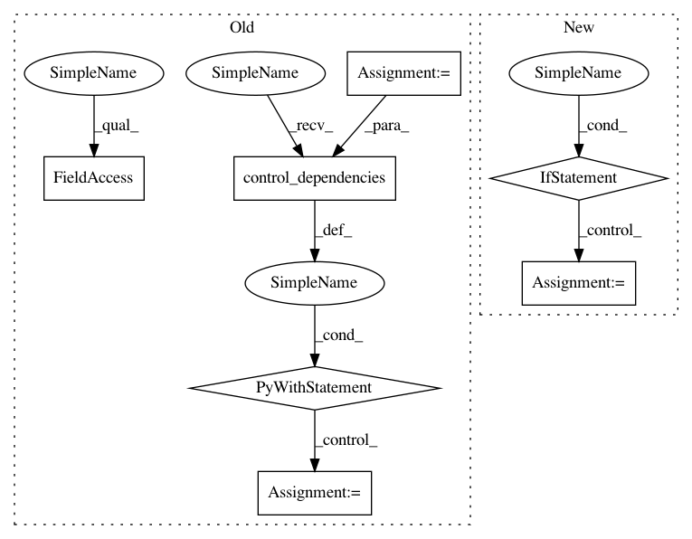

b08a142edf180325b63441ec1b71119c393c4a64,tf_agents/metrics/tf_metrics_test.py,TFMetricsTest,testMetric,#TFMetricsTest#Any#Any#Any#Any#,149
Before Change
with run_mode():
trajectories = self._create_trajectories()
metric = metric_class()
deps = []
self.evaluate(metric.init_variables())
for i in range(num_trajectories):
with tf.control_dependencies(deps):
traj = metric(trajectories[i])
deps = tf.nest.flatten(traj)
with tf.control_dependencies(deps):
result = metric.result()
result_ = self.evaluate(result)
self.assertEqual(result_, expected_result)
After Change
expected_result):
with run_mode():
trajectories = self._create_trajectories()
if metric_class in [tf_metrics.AverageReturnMetric,
tf_metrics.AverageEpisodeLengthMetric]:
metric = metric_class(batch_size=2)
else:
metric = metric_class()
self.evaluate(tf.compat.v1.global_variables_initializer())
self.evaluate(metric.init_variables())
for i in range(num_trajectories):
self.evaluate(metric(trajectories[i]))
In pattern: SUPERPATTERN
Frequency: 3
Non-data size: 7
Instances
Project Name: tensorflow/agents
Commit Name: b08a142edf180325b63441ec1b71119c393c4a64
Time: 2019-07-25
Author: oars@google.com
File Name: tf_agents/metrics/tf_metrics_test.py
Class Name: TFMetricsTest
Method Name: testMetric
Project Name: tensorflow/agents
Commit Name: b08a142edf180325b63441ec1b71119c393c4a64
Time: 2019-07-25
Author: oars@google.com
File Name: tf_agents/metrics/tf_metrics_test.py
Class Name: TFMetricsTest
Method Name: testMetric
Project Name: Microsoft/nni
Commit Name: 9d468d2c742491af2d2f506c648ddc95ffea6a64
Time: 2019-10-20
Author: lanny@mail.hfut.edu.cn
File Name: src/sdk/pynni/nni/compression/tensorflow/builtin_pruners.py
Class Name: SensitivityPruner
Method Name: calc_mask
Project Name: tensorflow/kfac
Commit Name: a0ce9c776719da042d58022a31db5e99755588ad
Time: 2019-02-01
Author: jamesmartens@google.com
File Name: kfac/python/ops/kfac_utils/periodic_inv_cov_update_kfac_opt.py
Class Name: PeriodicInvCovUpdateKfacOpt
Method Name: kfac_update_ops